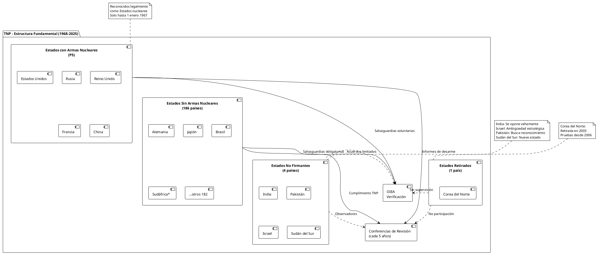

TNP en Crisis: Arquitectura Nuclear Global y Sus Fisuras en 2025
TNP en Crisis: Arquitectura Nuclear Global y Sus Fisuras en 2025
El Tratado de No Proliferación Nuclear (TNP), con 191 Estados parte, representa el acuerdo multilateral de desarme con mayor número de adhesiones en la historia de la humanidad. Sin embargo, en 2025, este pilar fundamental del orden internacional nuclear enfrenta desafíos existenciales que cuestionan su relevancia y eficacia en un mundo multipolar cada vez más complejo.
Tras 57 años de vigencia, el TNP se encuentra en una encrucijada crítica: mientras mantiene formalmente a la mayoría de la comunidad internacional bajo su paraguas normativo, la realidad geopolítica muestra fisuras profundas que amenazan con socavar todo el régimen de no proliferación.
Génesis y Arquitectura del Tratado
Contexto Histórico de Creación
Después de la Segunda Guerra Mundial, los países miembros de las Naciones Unidas decidieron que sería necesario impedir que se extendiera la posesión de armas nucleares, por el riesgo de que llegaran a manos irresponsables. El TNP, firmado en 1968 y en vigor desde 1970, surgió como respuesta a la creciente preocupación por la proliferación nuclear tras las pruebas de Francia (1960) y China (1964).
Los Tres Pilares Fundamentales
| Pilar | Objetivo Principal | Artículo TNP | Estado 2025 |
|---|---|---|---|
| No Proliferación | Prevenir extensión armas nucleares | I, II, III | Parcialmente exitoso |
| Desarme Nuclear | Eliminar arsenales existentes | VI | Fracaso evidente |
| Uso Pacífico | Promoción tecnología nuclear civil | IV | Relativamente exitoso |

{kind=link}
Análisis de Adhesión y No Adhesión
Estados Parte del TNP (191 países)
Potencias Nucleares Reconocidas (P5)
Solo a cinco Estados se les permitió la posesión de armas nucleares: Estados Unidos (firmante en 1968), Reino Unido (1968), Francia (1992), Unión Soviética (1968, sustituida por Rusia), República Popular China (1992).
La tardía adhesión de Francia y China (1992) reveló las limitaciones iniciales del tratado y la resistencia de potencias nucleares a renunciar a su autonomía estratégica.
Estados Sin Armas Nucleares
La amplia mayoría de países firmantes han cumplido formalmente sus obligaciones de no proliferación, aunque varios mantienen capacidades tecnológicas avanzadas que podrían facilitar un programa de armas:
| Región | Países Clave | Capacidad Técnica | Motivaciones Potenciales |
|---|---|---|---|
| Europa | Alemania | Muy alta | Autonomía estratégica UE |
| Italia | Alta | Estatus regional | |
| Asia-Pacífico | Japón | Muy alta | Amenazas China/Corea N. |
| Corea del Sur | Alta | Disuasión norcoreana | |
| Oriente Medio | Arabia Saudí | Media-Alta | Rivalidad con Irán |
| Turquía | Media | Influencia regional | |
| América Latina | Brasil | Media | Liderazgo sudamericano |
| Argentina | Media | Paridad con Brasil |
Estados No Firmantes: Los Outsiders del Sistema
India: El Disidente Ideológico
De los 4 países que son India, Pakistán, Israel y Sudán del Sur, solo India se opone vehementemente al tratado. India argumenta que el TNP es discriminatorio al legitimar el monopolio nuclear de las P5, considerándolo una estructura neocolonial que perpetúa desigualdades globales.
Argumentos indios contra el TNP:
- Discriminación institucionalizada entre estados "nucleares" y "no nucleares"
- Ausencia de compromisos vinculantes de desarme por parte de las P5
- Necesidades de seguridad nacional frente a China y Pakistán
- Demanda de reconocimiento como potencia nuclear responsable
Pakistán: En Busca de Reconocimiento
Pakistán solicita su reconocimiento como estado nuclear en el TNP. Su programa nuclear, desarrollado en respuesta a la capacidad india, refleja las dinámicas de carrera armamentística regional que el TNP no pudo prevenir.
Israel: La Ambigüedad Estratégica
Israel mantiene un estado de ambigüedad respecto a sus capacidades nucleares. Esta política de "opacidad nuclear" le permite mantener disuasión sin asumir las responsabilidades formales de un estado nuclear declarado.
Sudán del Sur: El Nuevo Actor
Como el estado más reciente del mundo (independencia en 2011), Sudán del Sur representa un caso único: un país que nació en la era nuclear pero no ha adherido al TNP, aunque carece de capacidades nucleares.
El Caso Excepcional: Corea del Norte
Corea del Norte ratificó el tratado, pero revocó su firma en 2003 tras una disputa con los inspectores sobre las "inspecciones de instalaciones nucleares no declaradas". Este precedente de retirada unilateral estableció un peligroso modelo que podría ser emulado por otros estados.
Cronología de la retirada norcoreana:
- 1985: Adhesión al TNP
- 1993: Primera amenaza de retirada
- 2003: Retirada efectiva del TNP
- 2006: Primera prueba nuclear
- 2025: Arsenal estimado de 50 ojivas
Desarrollo Institucional y Evolución Normativa
Conferencias de Revisión: Motor de Evolución
El mecanismo de revisión quinquenal ha servido como barómetro de la salud del régimen:
| Año | Resultado | Significado Político |
|---|---|---|
| 1995 | Extensión indefinida | Consolidación post-Guerra Fría |
| 2000 | Programa de Acción (13 pasos) | Compromiso de desarme |
| 2005 | Fracaso total | Crisis de legitimidad |
| 2010 | Plan de Acción renovado | Recuperación parcial |
| 2015 | Sin documento final | Parálisis diplomática |
| 2020 | Postpuesto (COVID-19) | Incertidumbre institucional |
| 2022 | Fracaso por veto ruso | Geopolítica sobre desarme |
Complementos Institucionales
Tratado de Prohibición Completa de Ensayos Nucleares (CTBT)
Aunque no en vigor, complementa el TNP prohibiendo todas las pruebas nucleares. Su ratificación pendiente por potencias clave (Estados Unidos, China) refleja las limitaciones del multilateralismo nuclear.
Tratado de Prohibición de Armas Nucleares (TPAN)
Adoptado en 2017, representa una alternativa radical al enfoque gradualista del TNP, buscando la prohibición total y eliminación de armas nucleares.
Impacto Histórico y Logros
Éxitos Documentados
Prevención de Proliferación Masiva
El TNP ha conseguido mantener el "club nuclear" en nueve miembros durante décadas, evitando predicciones apocalípticas de 20-30 potencias nucleares para el año 2000.
Promoción de Usos Pacíficos
El régimen ha facilitado la transferencia tecnológica nuclear para fines civiles, contribuyendo al desarrollo de la industria nuclear mundial.
Casos de Abandono Voluntario
- Sudáfrica: Desmanteló seis dispositivos nucleares antes de la adhesión (1991)
- Kazajstán, Bielorrusia, Ucrania: Transfirieron arsenales soviéticos a Rusia
- Brasil, Argentina: Abandonaron programas de armas en los años 80-90
Fracasos Evidentes
Desarme Nuclear
Las potencias nucleares han modernizado y expandido sus arsenales en lugar de desarmar, violando el espíritu del Artículo VI.
Casos de Proliferación
India (1974), Pakistán (1998), Corea del Norte (2006) desarrollaron armas nucleares fuera del régimen TNP.
Crisis de Verificación
Los casos de Irak, Libia, Irán y Siria revelaron limitaciones en los sistemas de salvaguardias del OIEA.
Limitaciones Estructurales y Desafíos Contemporáneos
Defectos de Diseño Fundamental
Discriminación Institucionalizada
El TNP crea dos categorías legales de estados, legitimando el monopolio nuclear de cinco potencias mientras niega este derecho a otros 186 países.
Artículo VI: Ambigüedad Deliberada
"Perseguir de buena fe negociaciones sobre medidas eficaces" es una formulación vaga que permite interpretaciones divergentes sobre obligaciones de desarme.
Mecanismo de Retirada (Artículo X)
La posibilidad de retirada unilateral con tres meses de aviso socava la permanencia del compromiso de no proliferación.
Desafíos del Siglo XXI
Erosión de la Bipolaridad
El ascenso de China como tercera superpotencia nuclear complica las dinámicas tradicionales de control de armamentos diseñadas para un mundo bipolar.
Nuevas Tecnologías
Desarrollos en inteligencia artificial, ciberseguridad e hipersónicos escapan al marco regulatorio del TNP.
Actores No Estatales
El riesgo de terrorismo nuclear no está adecuadamente abordado por un tratado diseñado para regular estados.
Polarización Geopolítica
Las tensiones entre potencias nucleares (Estados Unidos-Rusia, Estados Unidos-China, India-Pakistán) erosionan la cooperación multilateral.
Evaluación Crítica: Balance de Costos y Beneficios
Logros Indiscutibles
| Métrica | Sin TNP (Escenario) | Con TNP (Realidad 2025) |
|---|---|---|
| Número de potencias nucleares | 20-30 (predicción 1960s) | 9 Estados |
| Transferencias de armas | Múltiples casos | Cero documentados |
| Uso civil tecnología nuclear | Limitado y caótico | Regulado e internacional |
| Norma anti-proliferación | Inexistente | Universalmente aceptada |
Fracasos Críticos
Hipocresía Nuclear
Las P5 han invertido billones en modernización mientras predican desarme a otros estados.
Selectividad Política
Estados Unidos e India firmaron el Acuerdo Nuclear Civil (2008) violando el espíritu del TNP, mientras Irán enfrenta sanciones por actividades técnicamente legales.
Obsolescencia Progresiva
El TNP fue diseñado para un mundo de 1968, no para las realidades geopolíticas de 2025.
Perspectivas Futuras: Escenarios y Opciones
Escenario 1: Reforma Gradual (Probabilidad: 30%)
- Modernización de salvaguardias OIEA
- Protocolos adicionales universales
- Mayor transparencia en arsenales P5
- Mecanismos de verificación reforzados
Escenario 2: Fragmentación Controlada (Probabilidad: 35%)
- Reconocimiento de facto de India, Pakistán e Israel
- TNP "Plus" para estados tecnológicamente avanzados
- Regímenes regionales complementarios
- Coexistencia con TPAN
Escenario 3: Crisis Terminal (Probabilidad: 25%)
- Más retiradas al estilo norcoreano
- Colapso del consenso multilateral
- Proliferación en cascada regional
- Fragmentación en bloques geopolíticos
Escenario 4: Renovación Transformacional (Probabilidad: 10%)
- Compromiso real de desarme por P5
- Eliminación gradual de arsenales
- Transición hacia seguridad cooperativa
- TNP como modelo para otros regímenes
Recomendaciones Estratégicas
Reformas Inmediatas (2025-2030)
- Transparencia vinculante: Obligar a las P5 a reportar números exactos de arsenales
- Criterios de progreso: Establecer métricas cuantificables para el desarme
- Inclusión controlada: Diálogo formal con India, Pakistán e Israel
- Fortalecimiento OIEA: Recursos y autoridad para verificación avanzada
Transformaciones Estructurales (2030-2040)
- Artículo VI renovado: Compromisos temporales específicos de desarme
- Mecanismo de retirada restrictivo: Proceso más complejo y costoso
- Tecnologías emergentes: Protocolos para IA, cyber y nuevas armas
- Gobernanza inclusiva: Representación más equitativa en órganos directivos
Conclusión
El TNP en 2025 se encuentra en una paradoja existencial: es simultáneamente el tratado de desarme más exitoso y el más fracasado de la historia. Ha prevento la proliferación masiva pero ha fallado en su promesa fundamental de desarme. Ha creado normas universales pero mantiene discriminaciones anacrónicas.
Su supervivencia dependerá de la capacidad de adaptación a un mundo multipolar donde nuevos actores desafían el monopolio nuclear de las P5. La alternativa no es la perfección, sino el caos: un mundo sin TNP sería inevitablemente más peligroso, pero un TNP inmutable se volverá progresivamente irrelevante.
El desafío para los próximos 25 años será transformar un tratado de la Guerra Fría en un instrumento eficaz para el siglo XXI, manteniendo sus logros mientras aborda sus fracasos fundamentales. La ventana de oportunidad se cierra rápidamente: la próxima década determinará si el TNP evoluciona o perece.
Referencias Documentales
- International Atomic Energy Agency. "The NPT and IAEA Safeguards", Viena, 2025.
- United Nations Office for Disarmament Affairs. "2020 NPT Review Conference Background", Nueva York, 2024.
- Treaty on the Non-Proliferation of Nuclear Weapons, texto completo, 1968.
- Stockholm International Peace Research Institute. "SIPRI Yearbook 2025: NPT Assessment".
- Center for Strategic and International Studies. "The Future of the NPT Regime", Washington, 2025.
- Monterey Institute of International Studies. "Nuclear Non-Proliferation: A Critical Assessment", 2024.
- Council on Foreign Relations. "The NPT at 57: Crisis or Adaptation?", Nueva York, 2025.
- International Campaign to Abolish Nuclear Weapons. "TNP vs TPAN: Complementarity or Competition?", 2024.
- Arsenal Nuclear Global: Geopolítica de la Disuasión en 2025